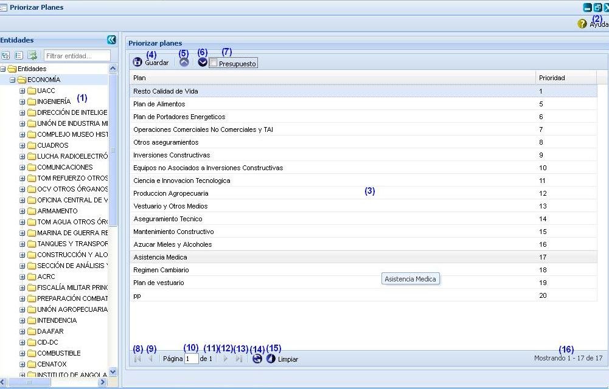

--Priorizar planes--
Esta funcionalidad permite asignarle prioridad a los planes. Esto permitirá que en la funcionalidad Balance material se puedan ir cubriendo las demandas siguiendo la prioridad de los planes. Para acceder a esta funcionalidad se puede acceder a través de la opción Inicio\Planificación material\Plan\Priorizar planes. Una vez accedida a la misma el sistema le mostrará la interfaz principal de dicha funcionalidad.
Nota: solo podrán acceder a esta funcionalidad aquellos usuarios que presenten categoría rector.

Figura 1. Priorizar planes.
Las diferentes opciones que conforman la figura anterior permiten:
- Mostrar el listado de entidades.
- Mostrar ayuda de la funcionalidad. Se puede realizar esta operación seleccionando la combinación de teclas (Alt + H).
- Mostrar el listado de planes gestionados en la funcionalidad Gestionar plan.
- Guarda los cambios de prioridad que se le realicen a los planes.
- Incrementar prioridad, permite que después de tener seleccionado un plan, se pueda seleccionar la opción (5) y aumenta la prioridad del plan.
- Disminuir prioridad, permite que después de tener seleccionado un plan, se pueda seleccionar la opción (6) y disminuye la prioridad del plan.
- Seleccionar si quiere o no ver los planes de presupuesto para establecer la prioridad.
- Ir a la primera página, mostrando los primeros planes.
- Ir a la página anterior.
- Muestra el número de la página donde se encuentra, se puede introducir el número.
- Muestra el número máximo de páginas.
- Ir a la siguiente página.
- Ir a la última página.
- Actualizar el listado de los planes.
- Limpiar filtro(s). Esta acción limpiará todos los criterios de búsqueda, deshabilitando los filtros realizados. Se puede realizar esta operación seleccionando la combinación de teclas (Alt + L).
- Mostrar la cantidad de resultados encontrados.
Nota: es importante tener en cuenta que cada uno de los planes mostrados en el panel derecho Priorizar planes, serán aquellos planes materiales que hayan sido creados para la entidad seleccionada en el panel izquierdo Entidades.